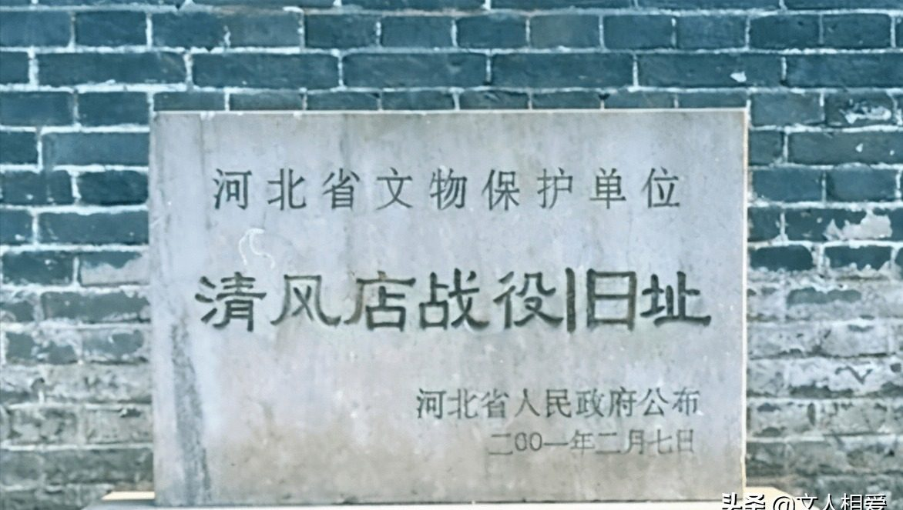
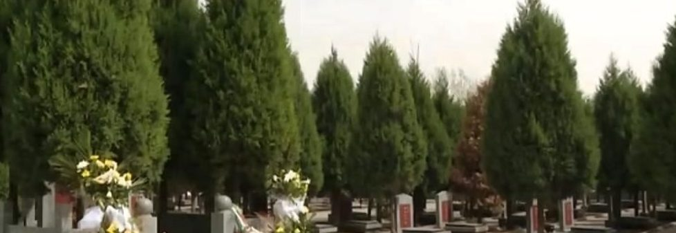
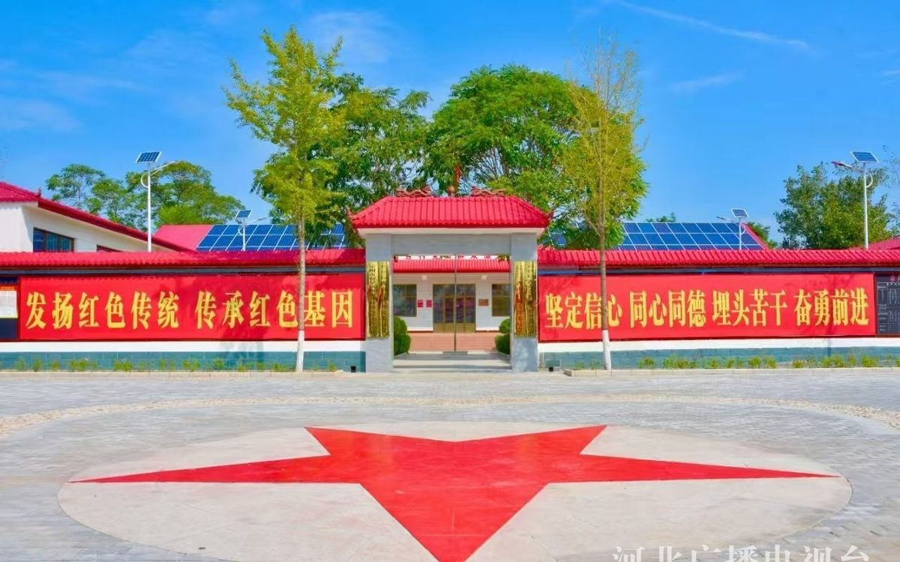
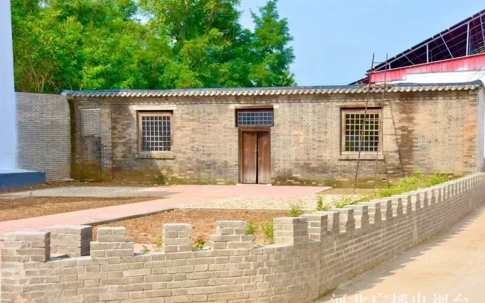
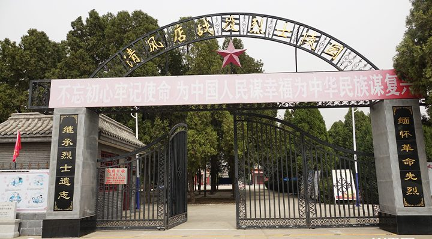
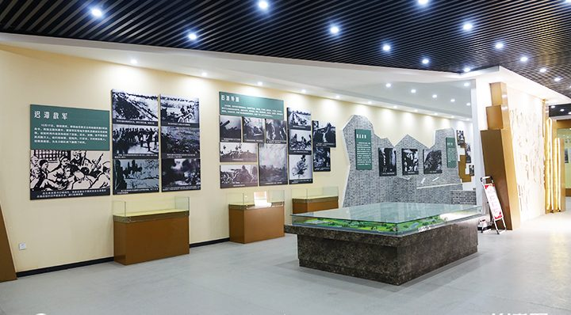
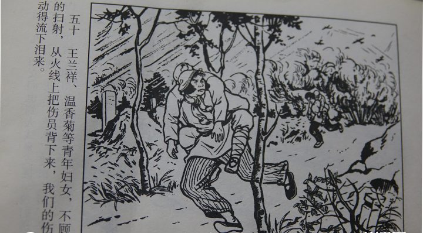
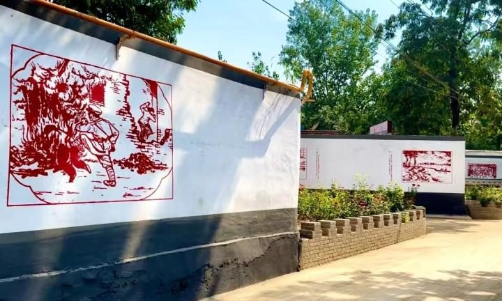

一座村庄，一场大捷，一座丰碑。
这里长眠着1947年那个秋天不肯回家的人。
1947年10月，晋察冀野战军在以西南合村为中心的清风店地区，全歼国民党第三军主力一万七千余人。 次年9月，定县人民在战场旧址建起这座陵园——让牺牲的人有名字，让后来的人有地方鞠躬。
—— 河北 · 定州 · 西南合村
这是晋察冀野战军转入战略反攻后取得的第一个大胜利。它让华北战场的攻守之势为之一变， 也为石家庄乃至华北的解放创造了有利条件。
驻防石家庄的国民党第三军军长罗历戎，率第七师、第二十二师六十六团及直属部队一万七千余人，由石家庄向北开拔。
野战军主力昼夜兼程南下，在冀中人民支援下急行军二百多里，提前到达指定位置，把北进之敌包围在清风店东北的几个村庄。
民兵沿唐河北岸埋设地雷，村民带路、送粮、转运伤员。军民合力，包围圈越收越紧。
11时30分，战斗结束。第三军军部、第七师及第六十六团被全歼，军长罗历戎被俘，共歼敌一万七千余人。
1948年9月，为纪念在清风店战役中牺牲的烈士，定县县委、县人民政府在战役发生地西南合村兴建烈士陵园。 陵园位于村东，大门坐南朝北，青砖围墙环绕，园内六行柏松七十余株，挺拔苍翠。

陵园占地十四亩，由纪念亭、石牌坊、纪念馆、烈士公墓区和影片放映室五部分组成。 苍松翠柏之间，六角纪念亭静静伫立，亭内汉白玉纪念碑上，聂荣臻元帅题写的 “燕赵遗风”四个大字厚重端凝；碑的背面，刻着《清风店大捷记略》。
军民协力歼敌获阵前大捷，忠勇绝伦万众仰望；
烈士浴血捐躯建不朽奇功，精神不死浩气长存。
—— 石牌坊楹联
“我们来时，
山河已无恙。”
作为全国红色美丽村庄试点村，西南合村把红色资源、乡村建设与研学旅游串成一条线： 以清风店战役旧址、烈士陵园为轴心，一条红色旅游环线在村庄里铺展开来。

沿红色诗词街区走进“大捷胡同”，59幅清风店歼灭战连环画铺满两侧墙面； 胡同里8处有历史特色的民房被改建成纪念馆，古色古香的老巷道恢复了旧时模样。 村集体还成立了定州首个村级红色旅游服务公司“南合晓日”，让红色资源变成村民的收成。

点开可以看大图




陵园免费开放。带上孩子，带一束花，在纪念亭前读一读碑文，再去村里走一走大捷胡同——这是最朴素也最有效的纪念。